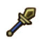

英雄数据
| 克撒 |

|
|
|
| 精灵之神库尼与黄昏女神厄曼特鲁德所生的湖月精灵的直系后裔，看似冷淡实则温柔。 |
 43962 |
 4644 |
 1199 |
 30% |
 20% |
| 英雄评价 |
| 特技趟地装死。 自身兵种携带完全不符合自身技能... 复活后只是攻防而不是血防...矛兵防御和血量成长本来就低...还被高文克制 |
| 推荐装备 | ||

|

|

|

|

|

|
克撒
| 星级 | 4星 | 称呼 | |
|---|---|---|---|
| 定位 | 肉盾 | 携带兵种 | 长枪兵 |
| 种族 | 精灵 | 性别 | 男 |
| 获取 | 成就 | 类型 | 近战 |
技能信息
| 技能名称 | 技能类型 | 技能效果 |
|---|---|---|
 死而复生 |
主动技能 | 死后原地复活，恢复总血量百分比的血量，并增加自身的攻击力和防御力20%。 |
 王者祝福 |
被动技能 | 英雄攻击力和防御力上升5%（+5%每级），提升等级提高效果。 |
兵种信息
| 兵种名称 | 武器 | 防具 | 生命 | 攻击 | 防御 | 幸运 | 闪避 | 移动速度 | 攻击范围 |
|---|---|---|---|---|---|---|---|---|---|
 长枪兵 |
 穿刺 |
皮甲 |
379 | 238 | 40 | 无 | 无 | 65 | 近身 |
| 特殊技能：无 | |||||||||
 精锐长枪兵 |
穿刺 |
皮甲 |
408 | 252 | 42 | 无 | 无 | 65 | 近身 |
| 特殊技能：无 | |||||||||
 长戟兵 |
穿刺 |
锁甲 |
426 | 273 | 43 | 无 | 无 | 65 | 近身 |
| 特殊技能：团结：当英雄存活时基础攻击力增加30％。 | |||||||||
 斯巴达 |
穿刺 |
皮甲 |
416 | 249 | 41 | 30 | 无 | 65 | 近身 |
| 特殊技能：列阵：每击杀一个目标，增加英雄3%基础攻击力，最多75％ | |||||||||
| 推荐进阶兵种：斯巴达 |
| 推荐理由：这是个死后复活的肉（前期），用他的人不多，在楼主看来，如果他复活后前期加的攻击依然在的话，那选斯巴达做小兵就很划得来了，不知是否有大神做过测试？毕竟复活后在地方后排戳戳法师也是蛮好的。 |